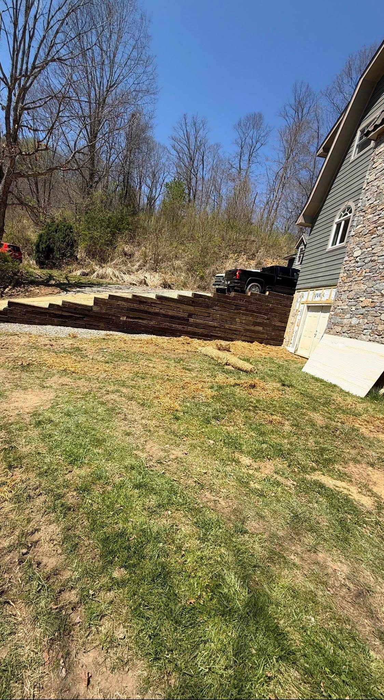
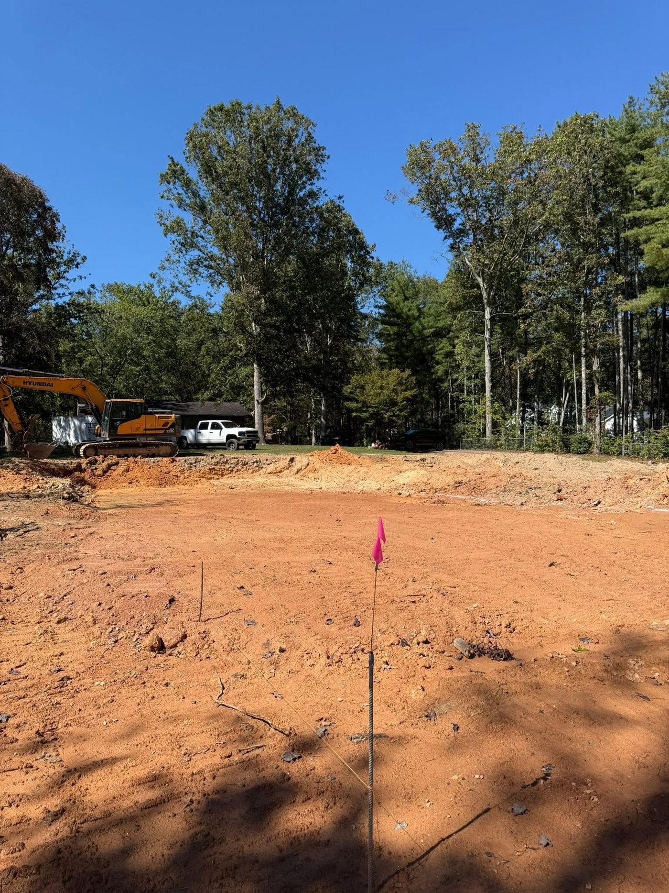

Proof in the dirt
The work.
Dirt work is easy to talk about and hard to fake. Real jobs across the western North Carolina mountains — grading, driveways, drainage, pads, and site prep.





Slide it yourself
Rough ground to finish grade.
Drag the handle: torn-up ground on one side, finished grade on the other. That's the whole job in one motion.
Got a true before-and-after of your own lot? That's exactly what we'll show here for your job.
Like what you see?
Your lot could be the next before-and-after in this gallery. Let's go take a look at it.